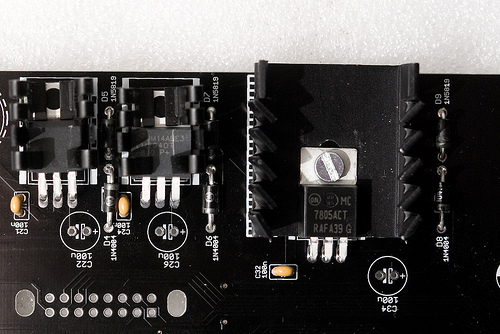
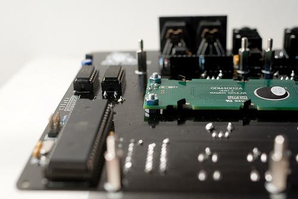
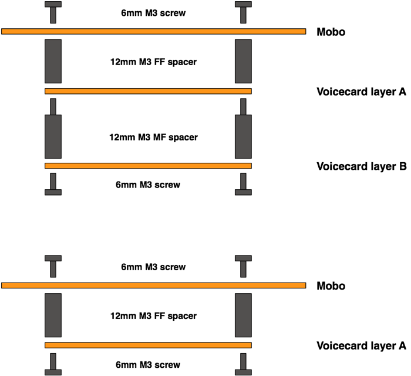
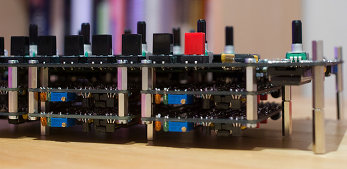
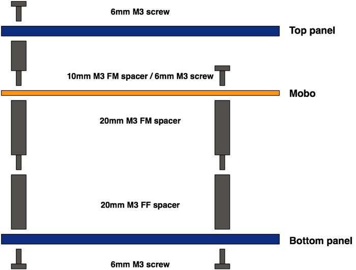

Bill of materials
All the mechanical parts described in this section are listed here. Note that the kits come with custom 40mm spacers, which are hard to find - you can obtain the same height by stacking together a 20mm MF spacer and a 20mm FF spacer.
Motherboard
A few elements are directly screwed onto the motherboard:
- The large heatsink for the 7805 regulator is kept in place with one 6mm M3 screw and a M3 nut. Screws are not needed for the two other heatsinks which are directly clipped onto the 7908 and LM2940-8.0 regulators.
- The LCD module is held by four 10mm M3 screws, and 8 M3 nuts.


Voicecard / motherboard assembly
A 12mm M3 female/female spacer is inserted between the motherboard and the first layer of voicecards. A 12mm M3 female/male spacer is inserted between the two layers of voicecards.

Case assembly

Note that the voicecards are "hanging" from the motherboard -- they are not attached to the case.
The top panel of the case is attached to the motherboard through four 10mm female/male M3 spacers.
The bottom panel of the case is attached to the motherboard through twelve 40mm female/female M3 spacers. Since this is a rather unusual size, this height can be achieved with a 20mm male/female spacer and a 20mm female/female spacer.
